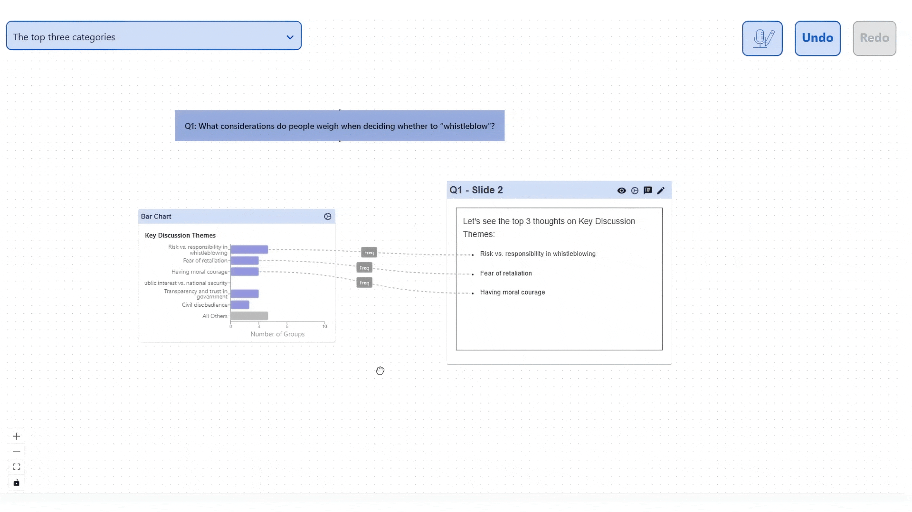
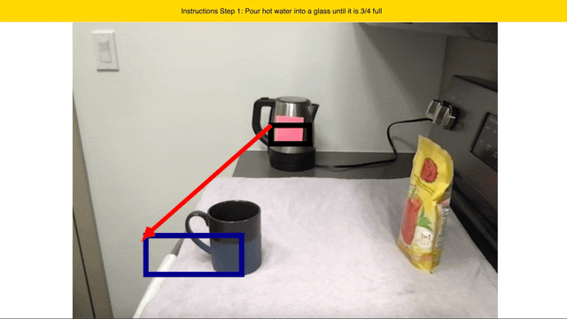
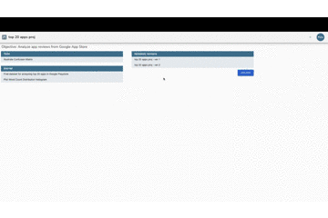
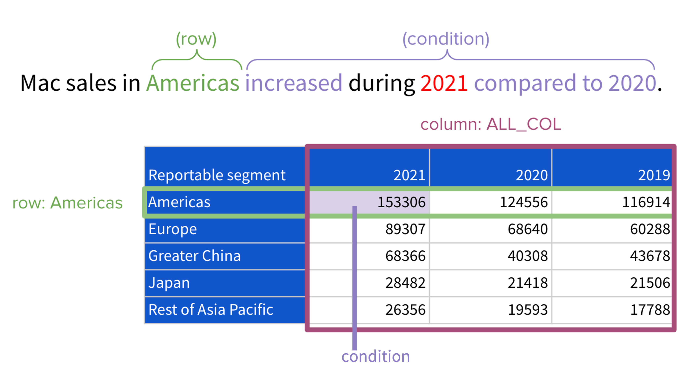
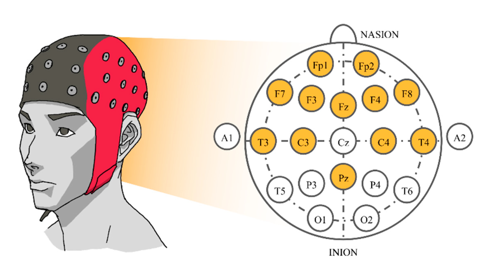
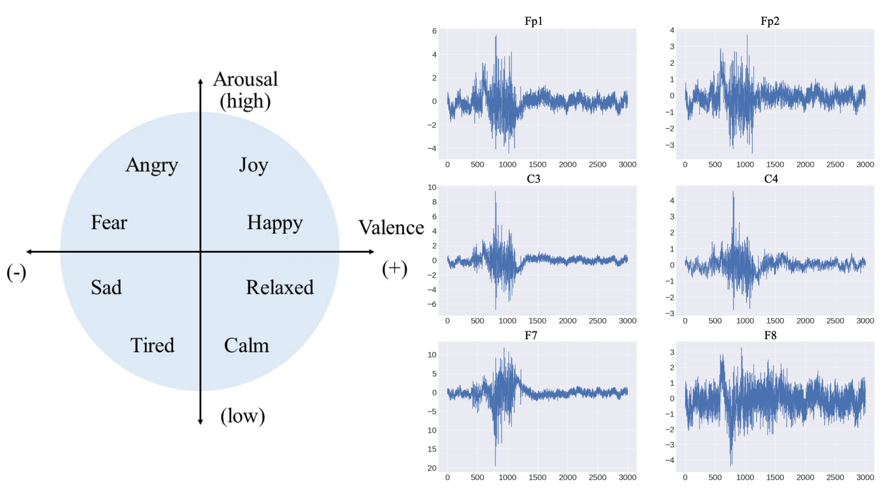

Panayu
Keelawat
Human – AI Interaction Researcher
I design and build interfaces where people and AI think together in real time — turning messy conversations, instructions, and data into tools that feel like a natural extension of how you already work. Currently a Ph.D. student at Virginia Tech.
About
I'm a Ph.D. student in Computer Science at Virginia Tech, advised by Prof. Yan Chen. My research asks how people and AI can collaborate in real time — designing interfaces where AI assistance stays legible, steerable, and genuinely useful in the middle of live work.
During my M.S. at UC San Diego, I worked with Prof. Haijun Xia on natural language interfaces that let people converse with their own data. I earned my B.Eng. in Computer Engineering from Chulalongkorn University, where I was supervised by Prof. Boonserm Kijsirikul on brain–computer interfaces — my first taste of designing for a signal messier than any user ever is.
I've also shipped production interfaces as a software engineer at Amazon Alexa, on the Alexa Comms Calling Experience team, and at Refinitiv (Thomson Reuters), building DTaaS, a cloud platform for inter-bank FX deal tracking.
Experience
Work
-
Aug 2022 — Aug 2024
Software Development Engineer
Amazon · Alexa Comms Calling Experience, Seattle
Maintained and re-architected the core Alexa calling platform serving millions of calls a day, enabling LLM-driven experiences with Alexa+. Let customers place and drop in on calls through GUI or voice, with call history synced to the Alexa app.
-
Jun 2019 — May 2020
Software Engineer
LSEG · Bangkok, Thailand
Built and deployed DTaaS, a cloud platform for inter-bank FX deal tracking moving over $425B in daily transaction volume. Gave traders a single view to monitor, track, and audit deals.
-
May 2018 — Jul 2018
Research Intern
The University of Osaka · advised by Prof. Masayuki Numao
EEG-based emotion recognition with deep convolutional neural networks — groundwork for two later publications.
Education
-
2024 — Present
Ph.D., Computer Science
Virginia Tech
Human–AI interaction design for real-time learning, collaboration, and debriefing tools.
-
2020 — 2022
M.S., Computer Science
UC San Diego
Natural language interfaces for data analysis workflows.
-
2015 — 2019
B.Eng., Computer Engineering
Chulalongkorn University · First Class Honors
Research on brain–computer interfaces and EEG-based emotion recognition.
Publications
-
01
The Help Ladder: Skill-Adaptive Peer Scaffolding for Real-Time Collaborative Programming
VL/HCC 2026
-
02

Dynamite: Real-Time Debriefing Slide Authoring through AI-Enhanced Multimodal Interaction
VL/HCC 2025
-
03

Transforming Procedural Instructions into In-Situ Augmented Reality Guides with InstructAR
UIST Poster 2024
-
04

NBGuru: Generating Explorable Data Science Flowcharts to Facilitate Asynchronous Communication in Interdisciplinary Data Science Teams
CSCW Poster 2023
-
05

Towards Understanding Text–Data Connection in Documents through the Lens of Data Operations
M.S. Thesis
-
06

A Comparative Study of Window Size and Channel Arrangement on EEG-Emotion Recognition Using Deep CNN
Sensors 2021
-
07

Subject-Independent Emotion Recognition During Music Listening Based on EEG Using Deep Convolutional Neural Networks
CSPA 2019
Teaching
Virginia Tech
Teaching Assistant
- CS 3744 Introduction to GUI Programming and Graphics Fall 2025, Spring 2026, Fall 2026
- CS 3654 Introductory Data Analytics and Visualization Fall 2024
- CS 3304 Comparative Languages Summer 2026
UC San Diego
Teaching Assistant
- CSS 1 Introductory Programming for Computational Social Science Winter 2022
Chulalongkorn University
Teaching Assistant
- 2110221 Computer Engineering Essentials Spring 2019